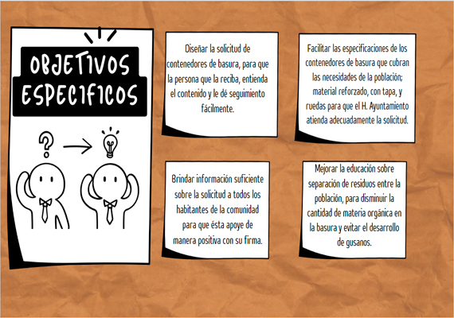
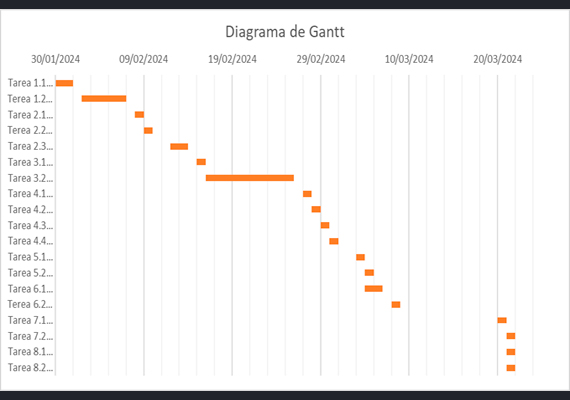

Inicio
Mi trabajo
Mi trabajo
PLANIFICACIÓN.
FASES del trabajo.
FASE 1: Todo sobre el proyecto.
FASE 2: Actividades y Recursos.
FASE 3: Division Del trabajo.
FASE 4: Tiempos De Ejecución.


![Para la realización de cualquier proyecto es importante siempre conocer los recursos que tenemos y los que necesitamos.
Existen recursos materiales, tecnológicos, financieros y humanos.
Sin embargo, desde mi punto de vista, los recursos humanos son los más importantes para llevar a cabo un proyecto porque son los responsables de planificar, ejecutar y controlar el proyecto. Son los que aportan el conocimiento, las habilidades y la experiencia necesarios para completar el proyecto. Además de ser los que toman decisiones y resuelven problemas, son los que representan el proyecto ante los demás. Los recursos materiales, tecnológicos y económicos son importantes, pero no pueden sustituir a los recursos humanos. Por ejemplo, si no hay personas calificadas para operar un equipo tecnológico, el equipo no será de utilidad. Si no hay personas con las habilidades necesarias para diseñar un producto, el producto no se podrá desarrollar y así con nuestro proyecto](_include/img/work/thumbs/image-02.jpg)
![B: En mi proyecto de solicitud de contenedores de basura, es necesario integrar colaboradores puesto que pueden proporcionar información valiosa sobre las necesidades de la comunidad, Mejor comprensión de las necesidades de la comunidad: Los colaboradores pueden proporcionar información sobre las necesidades de la comunidad en cuanto a la gestión de contenedores de basura. Por ejemplo, pueden informar sobre los tipos de residuos que se generan, los lugares donde se producen y los problemas que se enfrentan. Esta información puede ayudar a los responsables del proyecto a diseñar una solución que satisfaga las necesidades específicas de la comunidad.
D:Las dos opciones de tecnologías que considero me puedan ayudar de acuerdo a mi proyecto serian WhatsApp y Facebook, ya que en la actualidad el uso de redes sociales es primordial para dar a conocer un sinfín de servicios o productos a nivel local, nacional e internacional.](_include/img/work/thumbs/image-03.jpg)
{kind=link}
{kind=link}
{kind=link}